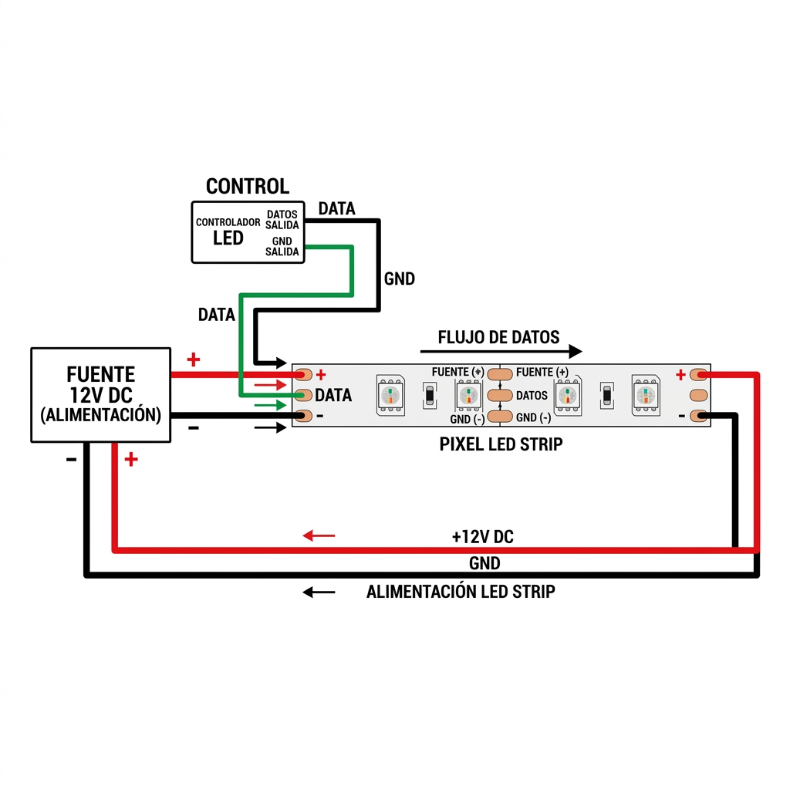
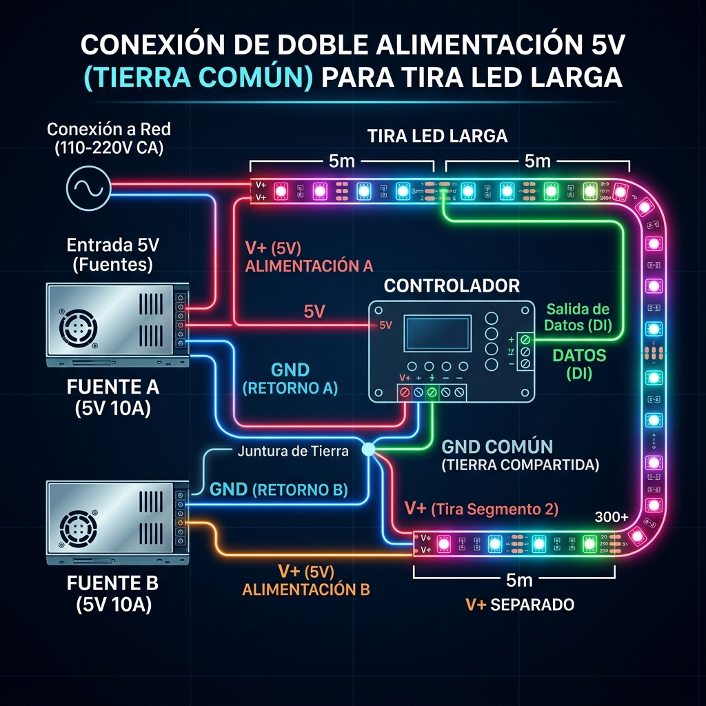

¿Alguna vez notaste que al final de una tira larga de 5V, el color blanco se vuelve amarillento o naranja? Eso es la **caída de tensión**. Las pistas de cobre de las tiras son muy delgadas y ofrecen resistencia al paso de la corriente.
¿Cómo funciona?
A medida que la corriente viaja por la tira, el voltaje disminuye. En tiras de 5V, esta caída es crítica: perder solo 1V significa que tus LEDs están funcionando a 4V, lo que no es suficiente para que el chip azul brille correctamente (de ahí que predomine el rojo).
La Solución: Inyección de Poder
Consiste en llevar cables gruesos directamente desde la fuente a diferentes puntos de la tira. Esto garantiza que el voltaje sea constante en todo el recorrido.

**Esquema de 3 hilos**: Se inyecta energía (+ / -) al inicio y al final, pero los DATOS solo se conectan al principio desde el controlador.
- **Inyección al inicio y final**: Obligatorio para tramos de más de 5 metros en 5V.
- **Inyección central**: Recomendada para proyectos de alta densidad de LEDs (144 leds/m).
Múltiples Fuentes: El Secreto de la Tierra Común
En proyectos grandes (como una fachada o un escenario), es normal usar más de una fuente de alimentación. Aquí es donde muchos cometen el error que quema controladores.
Reglas de Oro del Multifuente:
- ❌ NUNCA: Unas los positivos (+V) de dos fuentes distintas. Esto puede causar que una fuente intente "cargar" a la otra y terminen quemándose.
- ✅ SIEMPRE: Une los negativos (GND) de todas las fuentes y del controlador. Esto crea una Tierra Común, necesaria para que la señal de datos tenga una referencia estable.

**Diagrama de Tierra Común**: Las fuentes comparten el negativo (GND), pero sus positivos (+V) están aislados entre sí.
Ejemplo práctico: Si la Fuente A alimenta al controlador y los primeros 5 metros, y la Fuente B alimenta los siguientes 5 metros, debes conectar el cable de datos de forma continua, pero interrumpir el cable positivo entre el metro 5 y 6. El cable negativo (GND) debe recorrer toda la tira sin interrupciones uniendo ambas fuentes.